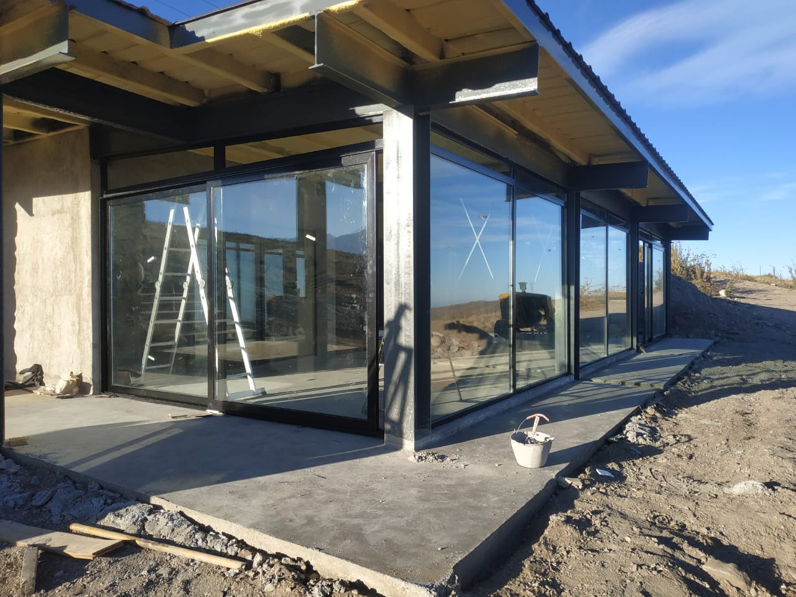
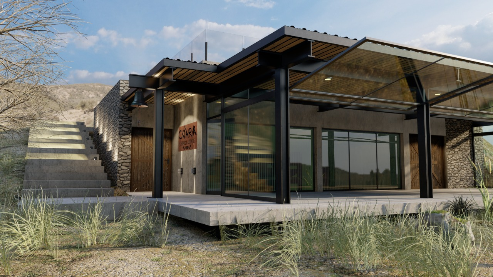

Carpintería de obra

Carpintería procesada para viviendas, empresas y grandes obras. Nos destacamos por nuestro Doble Vidriado Hermético realizado con los estándares y exigencia tecnológica de Ekoglass. Además estamos orgullosos de utilizar materiales que son amigables con el medio ambiente puesto que, tanto el vidirio como el aluminio, son materiales que pueden reciclarse infinitamente sin perder la calidad característica de los mismos.

Variedad de productos, colores, materiales y hasta tecnologías para que tu casa sea tu hogar soñado. Siempre buscamos darte lo mejor y mejorar como empresa para así seguir creciendo.